Lab 3 - Exploring dashboard tooling
Lab Goal
To explore the Perses API and be able to use the Perses command line tooling to gain insights into the current available projects, dashboards, and data sources.
Perses API - A little background
After installing Perses in the previous lab, you have the dashboard open in your browser. There
is an application programming interface (API) available for you to gain insights into the
configuration applied to your Perses server. You can find out more about the projects,
dashboards, and data sources that have been created. This can be handy to start with existing
resources and modify them for your own versions.
Perses API - The basic operations
The Perses API provides access to five operations (API end points) for every resource, listed
here in no particular order:
On the next slide you will explore some of the browser based API insights Perses provides.
- creating a resource
- updating a resource
- deleting a resource
- retrieving a single resource
- retrieving a list of resources
On the next slide you will explore some of the browser based API insights Perses provides.
Perses API - Viewing existing projects
You can view the configured projects on your Perses server with a browser, just enter this URL:
This shows you un-formatted JSON output of the available projects. You should see the single
http://localhost:8080/api/v1/projectsThis shows you un-formatted JSON output of the available projects. You should see the single
workshopproject listed:
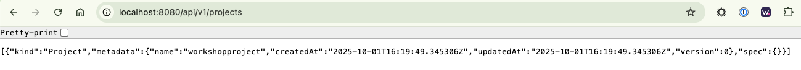
Perses API - Viewing projects (YARC)
Browsers are not great for viewing API responses, so let's use
a REST Client (YARC) (install
extension on your own) that automatically formats all responses, but you can use your preferred
REST client. Enter
and click on SEND REQUEST button:
http://localhost:8080/api/v1/projectsand click on SEND REQUEST button:
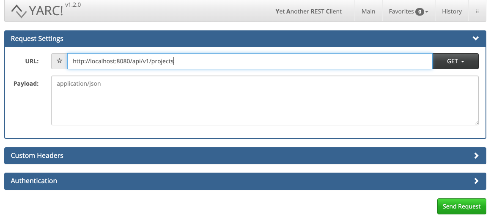
Perses API - Project response (YARC)
You'll see the API response is formatted for easy consumption, much better than in the browser:
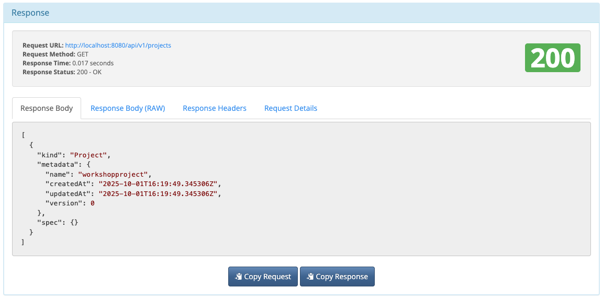
Perses API - Listing dashboards
Next we can look at the listing of available dashboards within the WorkshopProject with this
API request:
http://localhost:8080/api/v1/projects/workshopproject/dashboards
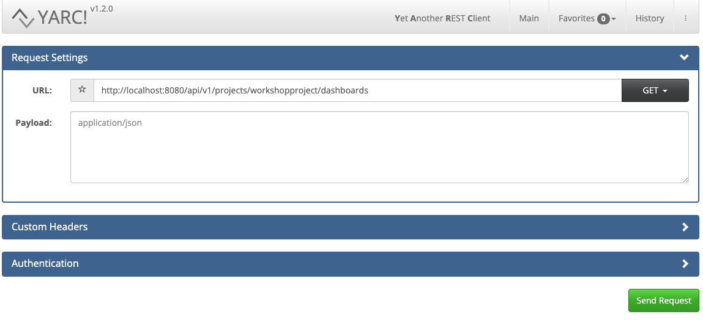
Perses API - Listing dashboards response
Note this view of the reply contains only partial results, as the response encompasses the
entire configuration for each available dashboard. In our case there is one dashboard listed as
MyFirstDashboard:
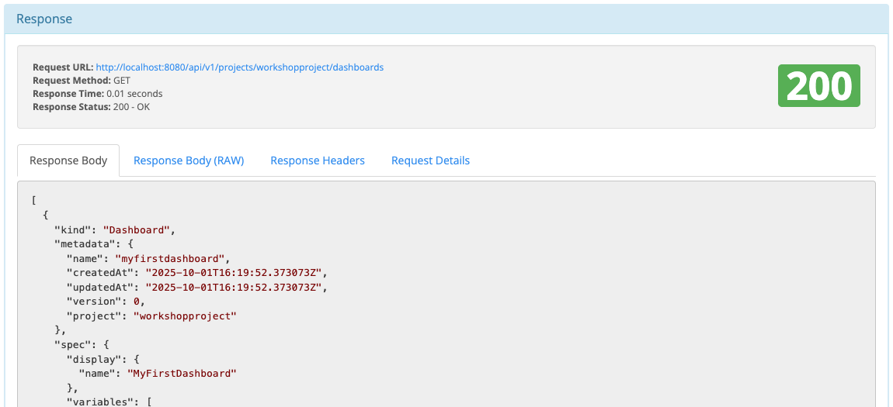
Perses API - Listing single dashboard
To grab an example configuration to start from a working dashboard, just specify a specific
dashboard:
http://localhost:8080/api/v1/projects/workshopproject/dashboards/MyFirstDashboard
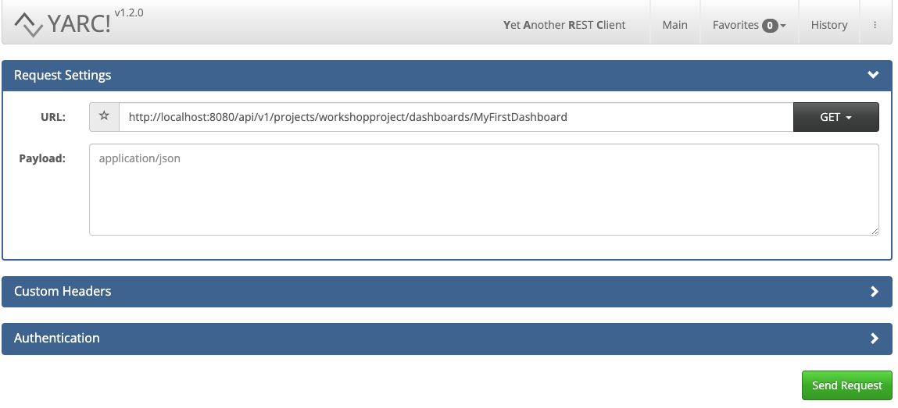
Perses API - Single dashboard response
Now the output response is just a single dashboard configuration for
MyFirstDashboard:
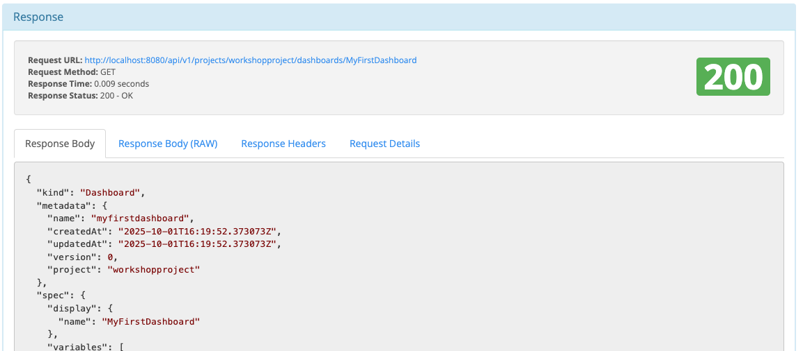
Perses API - Listing data sources
Data sources are where we point our dashboard queries to. Often metrics gathering Prometheus
instances as we're using Prom Query Language (PromQL). Let's list them within
WorkshopProject:http://localhost:8080/api/v1/projects/workshopproject/datasources
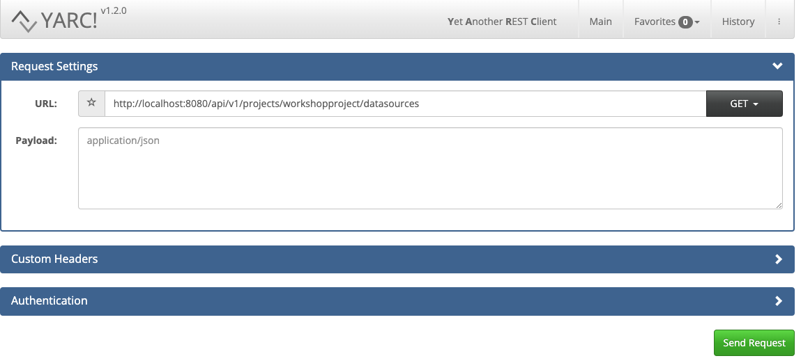
Perses API - Data sources response
We see the available data sources defined for our workshop demo project in the
specification. You can browse the details below:
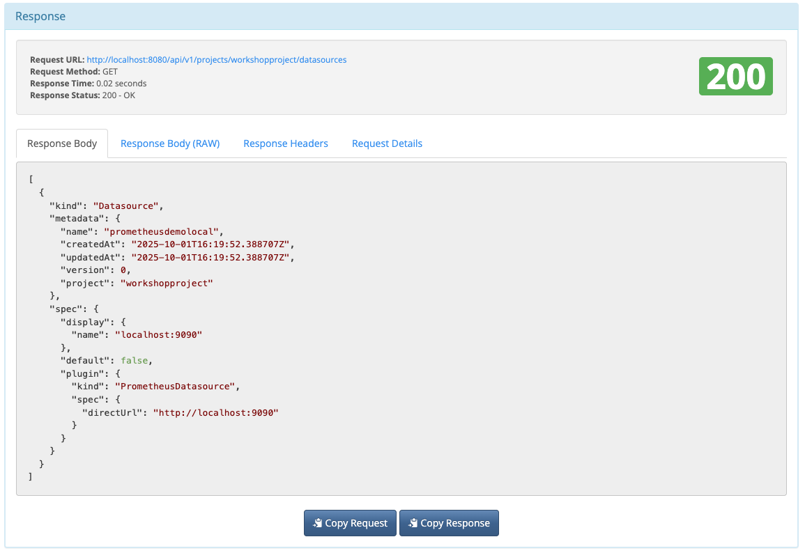
Perses API - Official documentation
We can't show all possible API usage here, so we will just consider these handled so far as
a basic introduction. It's enough to get you started and enough to know that the API is
available for you to explore further on your own. See the
API documentation
for more details.
Perses CLI - Command line tooling setup
If you choose the
If are using the container installation, then you will find a pre-built copy for your OS in
source installation, the percli
(command line) tooling is available in ./target/perses-[VERSION]/bin/percli.If are using the container installation, then you will find a pre-built copy for your OS in
./support/bin/percli-{OS_VERSION}-amd64.zip. Unzip the version for your
operating system (example below for OSX) and use to access the Perses container API (note, the
easy install project automatically unzips the version our OS needs):
$ ls -1 ./support/bin/
percli-darwin-amd64.zip
percli-linux-amd64.zip
percli-windows-amd64.zip
$ unzip ./support/bin/percli-darwin-amd64.zip -d ./support/bin/
Archive: ./support/bin/percli-darwin-amd64.zip
inflating: ./support/bin/percli
Perses CLI - Command line tooling usage
We're assuming you've just completed the setup for using the
percli command
line tooling. All examples shown in this lab will use the path to the tooling as shown below,
but you can use any path to the tooling you set up:
$ ./support/bin/percli --help
Command line interface to interact with the Perses API
Usage:
percli [command]
Available Commands:
apply Create or update resources through a file. JSON or YAML format supported
completion Generate the autocompletion script for the specified shell
config display local or remote config
dac Commands related to Dashboard-as-Code
delete Delete resources
describe Show details of a specific resource
get Retrieve any kind of resource from the API.
help Help about any command
lint Static check of the resources
login Log in to the Perses API
migrate migrate a Grafana dashboard to the Perses format
plugin Commands related to plugins development
project Select the project used by default.
refresh refresh the access token when it expires
version Display client version.
whoami Display current user used
Flags:
-h, --help help for percli
--log.level string Set log verbosity level. Values: panic, fatal, error, warning, info, debug, trace (default "info")
--percliconfig string Path to the percliconfig file to use for CLI requests. (default "/Users/erics/.perses/config.json")
Use "percli [command] --help" for more information about a command.
Perses CLI - Available commands
A few of the interesting available commands we will explore are:
- login - log in to an instance of the Perses API
- get - request a response from the Perses API
- project - select a project to be used as default
- describe - request details for a specific resource
- delete - delete a specific resource
- apply - create or update existing resources using JSON or YAML file
Perses CLI - The LOGIN command
The LOGIN command is used for connecting to a specific instance of the Perses API, in our case
we want to connect to our localhost server. Below is an image of the LOGIN command help
documentation:
$ ./support/bin/percli login -h
Log in to the Perses API
Usage:
percli login [URL] [flags]
Examples:
# Log in to the given server
percli login https://perses.dev
# Log in to the given server via delegated authentication, non-interactively
percli login https://demo.perses.dev --provider [slug_id] --client-id [client_id] --client-secret [client-secret]
Flags:
--client-id string Client ID used for robotic access when using external authentication provider.
--client-secret string Client Secret used for robotic access when using external authentication provider.
-h, --help help for login
--insecure-skip-tls-verify If true, server's certificate will not be checked for validity == insecure HTTPS connections.
-p, --password string Password used for the authentication.
--provider string External authentication provider identifier. (slug_id)
--token string Bearer token for authentication to the API server
-u, --username string Username used for the authentication.
Global Flags:
--log.level string Set log verbosity level. Values: panic, fatal, error, warning, info, debug, trace (default "info")
--percliconfig string Path to the percliconfig file to use for CLI requests. (default "/Users/erics/.perses/config.json")
Perses CLI - Logging in to Perses instance
First you need to log in to an instance of Perses before you can start exploring the API.
Connect to your Perses instance as follows (the command returns nothing):
$ ./support/bin/percli login http://localhost:8080
Perses CLI - The GET command
Now that we are connected, let's explore the GET command:
$ ./support/bin/percli get -h
Retrieve any kind of resource from the API.
Usage:
percli get [RESOURCE_TYPE] [PREFIX] [flags]
Examples:
# List all dashboards in the current project selected.
percli get dashboards
# List all dashboards that begin with a given name in the current project selected.
percli get dashboards node
# List all dashboards in a specific project.
percli get dashboards -p my_project
#List all dashboards as a JSON object.
percli get dashboards -a -ojson
Flags:
-a, --all If present, list requested object(s) across all projects. The project in current context ignored.
-h, --help help for get
-o, --output string Kind of display: json or yaml. Default is yaml
-p, --project string If present, the project scope for this CLI request
Global Flags:
--log.level string Set log verbosity. Possible values: panic, fatal, error, warning, info, debug, trace (default "info")
--percliconfig string Path to the percliconfig file to use for CLI requests. (default "/Users/erics/.perses/config.json")
Perses CLI - Listing all projects (GET)
Let's get a list of our projects using the GET argument as shown below and see again that we
have a single
WorkshopProject configured on our server:
$ ./support/bin/percli get projects
NAME │ AGE
─────────────────┼─────
workshopproject │ 17h
Perses CLI - Selecting a projects (PROJECT)
Now select a projects using the PROJECT argument as shown below:
$ ./support/bin/percli project workshopproject
project workshopproject selected
Perses CLI - Listing dashboards (GET)
Let's get a list of all dashboards using the GET argument as shown below:
$ ./support/bin/percli get --all dashboards
NAME │ PROJECT │ AGE
──────────────────┼─────────────────┼─────
myfirstdashboard │ workshopproject │ 17h
Perses CLI - Listing data sources (GET)
A final example using GET, by first asking for a listing of all data sources:
$ ./support/bin/percli get --all datasources
NAME │ PROJECT │ DATASOURCE TYPE │ AGE
─────────────────────┼─────────────────┼──────────────────────┼─────
prometheusdemolocal │ workshopproject │ PrometheusDatasource │ 17h
Perses CLI - The DESCRIBE command
You can list the details of a specific resource, such as a dashboard or data source using
DESCRIBE. The output will be in YAML by default (structured). Check out the documentation:
$ ./support/bin/percli describe -h
Show details of a specific resource
Usage:
percli describe [RESOURCE_TYPE] [NAME] [flags]
Examples:
## Describe a particular dashboard.
percli describe dashboard nodeExporter
## Describe a particular dashboard as a JSON object.
percli describe dashboard nodeExporter -ojson
Flags:
-h, --help help for describe
-o, --output string Kind of display: json or yaml. Default is yaml
-p, --project string If present, the project scope for this CLI request
Global Flags:
--log.level string Set log verbosity. Possible values: panic, fatal, error, warning, info, debug, trace (default "info")
--percliconfig string Path to the percliconfig file to use for CLI requests. (default "/Users/erics/.perses/config.json")
Perses CLI - Describing a data source
Using the name of the data source, we'll now request its details and expect formatted YAML
as the response (if you want unstructured JSON, try the
-ojson flag):
$ ./support/bin/percli describe datasource prometheusdemolocal
kind: Datasource
metadata:
name: prometheusdemolocal
createdAt: 2025-10-01T16:19:52.388707Z
updatedAt: 2025-10-01T16:19:52.388707Z
version: 0
project: workshopproject
spec:
display:
name: localhost:9090
default: false
plugin:
kind: PrometheusDatasource
spec:
directUrl: http://localhost:9090
Perses CLI - The DELETE command
The next command we are going to explore is DELETE, which you can use to remove any resource
from your server. Here is the documentation (scroll down to see all of it):
$ ./support/bin/percli delete -h
JSON and YAML formats are accepted.
If both a filename and command line arguments are passed, the command line arguments are
used and the filename is ignored. Note that the delete command does NOT do resource
version checks, so if someone submits an update to a resource right when you submit a
delete, their update will be lost along with the rest of the resource.
Usage:
percli delete (-f [FILENAME] | TYPE ([NAME1 NAME2] | --all)) [flags]
Examples:
# Delete any kind of resources from a file
percli delete -f data.json
# Delete any kind of resources from stdin
cat data.json | percli delete -f -
# Delete a specific dashboard
percli delete dashboards node_exporter cadvisor
# Delete all dashboards
percli delete dashboards --all
Flags:
-a, --all Delete all resources in the project of the specified resource types.
-d, --directory string Path to the directory containing the resources consumed by the command.
-f, --file string Path to the file that contains the resources consumed by the command.
-h, --help help for delete
-p, --project string If present, the project scope for this CLI request
Global Flags:
--log.level string Set log verbosity. Possible values: panic, fatal, error, warning, info, debug, trace (default "info")
--percliconfig string Path to the percliconfig file to use for CLI requests. (default "/Users/erics/.perses/config.json")
Perses CLI - Deleting a dashboard
Our server dashboard looks something like this currently:
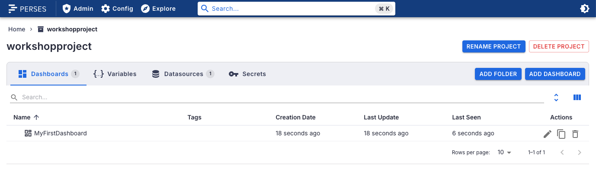
Now let's remove
MyFirstDashboard dashboard on the next slide...
Perses CLI - Deleting my first dashboard
Remove the
MyFirstDashboard dashboard with the following:
$ ./support/bin/percli delete dashboards MyFirstDashboard
object "Dashboard" "MyFirstDashboard" has been deleted in the project "workshopproject"
Perses CLI - Verifying deletion of dashboard
Reloading your Perses instance in the browser verifies that your dashboard has been removed, but
the project and datasource remain:
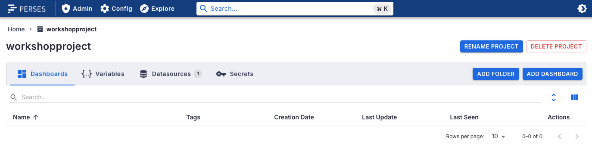
Perses CLI - The APPLY command
The APPLY command creates or updates any resource from a file. The changes are applied
to the server logged in to. Here is the documentation:
$ ./support/bin/percli apply -h
Create or update resources through a file. JSON or YAML format supported
Usage:
percli apply (-f [FILENAME] | -d [DIRECTORY_NAME]) [flags]
Examples:
# Create/update the resources from the file resources.json to the remote Perses server.
percli apply -f ./resources.json
# Create/update any resources from a folder
percli apply -d ./
# Apply the JSON passed into stdin to the remote Perses server.
cat ./resources.json | percli apply -f -
Flags:
-d, --directory string Path to the directory containing the resources consumed by the command.
-f, --file string Path to the file that contains the resources consumed by the command.
-h, --help help for apply
-p, --project string If present, the project scope for this CLI request
Global Flags:
--log.level string Set log verbosity. Possible values: panic, fatal, error, warning, info, debug, trace (default "info")
--percliconfig string Path to the percliconfig file to use for CLI requests. (default "/Users/erics/.perses/config.json")
Perses CLI - Applying dashboard update
Let's create a new
MyFirstDashboard using a provided file found in
./support/workshop-myfirstdashboard.json. It's a resource defining
our first dashboard, and we can update the server with this:
$ ./support/bin/percli apply -f support/workshop-myfirstdashboard.json
object "Dashboard" "MyFirstDashboard" has been applied in the project "workshopproject"
Perses CLI - Verifying our dashboard update
All is back to normal if you reload your Perses instance in the browser:

Perses CLI - Basic understanding of API usage
You now have a basic understand of what the Perses API is, how to connect, how to query, and
an understanding of setting up the command line tooling. You've also explored some of the API
interactions using the command line tooling.
Lab completed - Results
Next up, exploring dashboard components...

Contact - are there any questions?
Eric D. Schabell
Director Evangelism
Contact: @ericschabell {@fosstodon.org) or https://www.schabell.org
Director Evangelism
Contact: @ericschabell {@fosstodon.org) or https://www.schabell.org